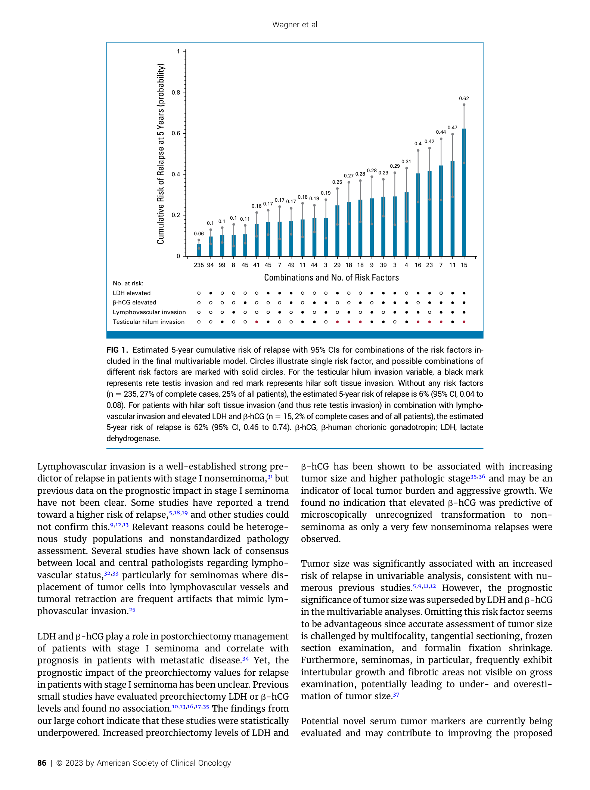
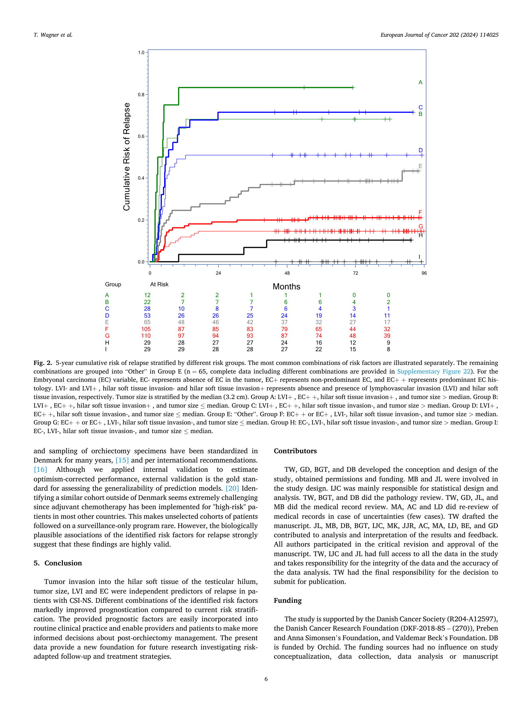

URO60 • ORIGINAL RESEARCH • DOCTORS' EDUCATION ONLY
Stage I testicular cancer
relapse evidence explorer
Explore the original figures and reported results from the Danish nationwide surveillance cohorts. Seminoma uses printed percentages; non-seminoma uses the two stated endpoint values and approximate bar-height readings digitised from the published figure. No fitted-model extrapolation is used.
Seminoma — published evidence
Explore study variables
Selected profile
All 24 combinations are transcribed from the original Figure 1. Published percentage labels are shown, with study counts. Exact confidence intervals are given only where explicitly stated in the figure caption; the original whiskers remain visible below.
Published five-year modelled relapse risk.
Interactive published bar chart — 24 combinations
Original published bar chart and factor matrix

Study at a glance
924 patients with clinical stage I seminoma under surveillance; 148 relapses. The paper reports a five-year relapse risk range of 6% to 62% across modelled combinations. Read the original paper for the full statistical methods and confidence intervals.
SEMINOMA • ADJUVANT THERAPY EVIDENCE
Number needed to treat to prevent one relapse
SWENOTECA observational cohorts reported relapse rates after surveillance and after one cycle of carboplatin (AUC 7). The NNTs below are arithmetic calculations from reported cohort percentages, not directly randomised treatment effects or Wagner-model predictions.
Relapse on surveillance
Relapse after carboplatin × 1
Absolute risk reduction
Calculated NNT (rounded up)
SWENOTECA V: 14.3% − 3.9% = 10.4% absolute reduction; 1 ÷ 0.104 = 9.62; NNT = 10.
All three reported comparisons
| Study group | Surveillance | Carboplatin × 1 | ARR | Calculated NNT |
|---|---|---|---|---|
| SWENOTECA V, overall | 14.3% | 3.9% | 10.4% | 10 |
| SWENOTECA VII, 1–2 risk factors | 15.5% | 9.3% | 6.2% | 17 |
| SWENOTECA VII, no risk factors | 4.0% | 2.2% | 1.8% | 56 |
Interpretation: NNT = 1 / (surveillance relapse proportion − carboplatin relapse proportion), rounded upwards. SWENOTECA V and VII differ in study era, case mix, selection and follow-up. The two VII risk factors were tumour size >4 cm and stromal rete testis invasion; these are not equivalent to the multivariable Wagner seminoma factors. Do not apply any of these NNTs to an individual Wagner bar or assume a patient-specific treatment benefit. Avoided relapse is not equivalent to improved survival; chemotherapy has adverse effects.
Original sources: Tandstad et al. J Clin Oncol (2011), SWENOTECA V PMID 21205748; Tandstad et al. Ann Oncol (2016), SWENOTECA VII doi:10.1093/annonc/mdw164. Both observational comparisons; calculated NNTs are derived from the published rounded percentages.
Non-seminoma — published evidence
Explore study variables
Selected profile
The original figure below contains the authors' modelled risk estimates and 95% confidence intervals. Intermediate percentages are approximate visual readings from the original figure.
Interactive combination selector — 36 published columns
Figure-digitised values: Percentages marked ≈ are approximate visual readings from the original Wagner Figure 1A, rounded to the nearest percentage point. They are not exact published values or new Cox-model predictions. The original 95% confidence intervals are shown in the source image below. The 5% and 86% endpoints are directly stated in the paper.
The original non-seminoma Figure 1A does not print numeric values on intermediate bars. We digitised approximate bar heights to the nearest percentage point (marked ≈). These are not exact published numbers and should be checked against the original image. The 5% and 86% endpoints are explicitly stated in the caption. Confidence intervals are not numerically digitised.
Original Figure 1 — estimated five-year relapse risk

Original Figure 2 — observed cumulative relapse

Published study results
453 patients; 139 relapses (30.6%); median follow-up 6.3 years. Internal validation concordance statistic 0.75.
Adjusted hazard ratios: LVI 3.48 (95% CI 2.38–5.10); non-predominant EC 2.49 (1.20–5.15); predominant EC 4.06 (1.98–8.32); hilar soft tissue invasion 1.70 (1.17–2.48); tumour size 1.60 (1.25–2.03) per doubling. These are associations, not absolute probabilities.
Explicitly reported endpoints: 5% (95% CI 1–8%) for a 2.1 cm tumour with no other modelled risk factors; 86% (95% CI 72–93%) for a 4.5 cm tumour with LVI, predominant EC and hilar soft tissue invasion.
For the overall cohort, the reported five-year relapse risk was 59% (95% CI 50–66%) for LVI-positive patients versus 17% (95% CI 12–21%) for LVI-negative patients. These are cohort-level estimates, not selected-profile predictions.
NON-SEMINOMA • ADJUVANT BEP EVIDENCE
Number needed to treat to prevent one relapse
Comparison of published surveillance relapse estimates with observed outcomes after one cycle of bleomycin, etoposide and cisplatin (BEP × 1), stratified by lymphovascular invasion (LVI). These are cross-study illustrative NNTs, not randomised treatment effects or predictions from Wagner's multivariable model.
Surveillance relapse estimate
Relapse after BEP × 1
Absolute risk reduction
Illustrative NNT (rounded up)
Common 0–50% horizontal scale
42% − 3.2% = 38.8% absolute reduction; NNT = ceiling(100 ÷ 38.8) = 3.
Evidence summary
| LVI status | Surveillance | BEP × 1 | ARR | Illustrative NNT |
|---|---|---|---|---|
| Positive | 42% | 3.2% | 38.8% | 3 |
| Negative | 17% | 1.6% | 15.4% | 7 |
Evidence: EAU Testicular Cancer Guidelines: approximate relapse rates on surveillance of 42% for LVI-positive and 17% for LVI-negative clinical stage I non-seminoma. Tandstad et al., SWENOTECA risk-adapted programme, Annals of Oncology (2014): five-year relapse rates after BEP × 1 of 3.2% (LVI-positive) and 1.6% (LVI-negative). EAU guidelines · SWENOTECA original study.
Limitations: Cross-study populations, selection, follow-up and relapse definitions may differ. These NNTs are derived from rounded percentages and are not causal estimates from a randomised surveillance-versus-BEP comparison. Adjuvant BEP reduces recurrence but exposes some patients already cured by orchidectomy to toxicity; preventing recurrence is not synonymous with improving cancer-specific survival. Do not apply this NNT to a selected Wagner bar or use for individual treatment decisions.
Methods, evidence and limitations
All charts are taken from the original publications. The factor controls identify the variables used in the papers; they do not reproduce a fitted Cox model. Seminoma displays the 24 printed Figure 1 percentages transcribed by column and the corresponding dot-matrix factors. Non-seminoma displays approximate digitised bar heights for all 36 Figure 1A combinations, marked ≈, and two precise endpoints expressly stated in the caption. Confidence intervals for other profiles require reading the original authors' whiskers.
The non-seminoma Figure 1 displays model-estimated five-year cumulative relapse risk; Figure 2 displays observed cumulative risk for selected common groups. The two must not be conflated. Confidence intervals and risk estimates should be read from the original figures.
Both cohorts were Danish surveillance populations. Internal validation does not constitute independent external validation, and relapse risk does not equal disease-specific mortality or establish a treatment indication.
Seminoma: Wagner T et al. J Clin Oncol. 2024;42:81–89. doi:10.1200/JCO.23.00959.
Non-seminoma: Wagner T et al. Eur J Cancer. 2024;202:114025. doi:10.1016/j.ejca.2024.114025. CC BY 4.0.
Independent educational presentation by Dr Jay Atkinson; not endorsed by the authors. No identifiable patient information should be entered. Read the full site-wide medical education disclaimer.